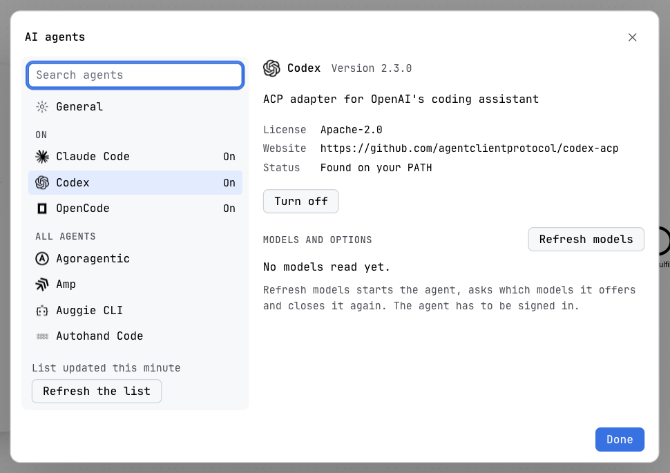

Guide / Set up a project
AI agents
The agents screen lists the AI agents Penstock can talk to, installs them, turns them on, and decides where the AI chat is shown. From a terminal, penstock agent starts an agent's own command line with Penstock's tools already set up.
What an agent is here
An agent is a program that speaks the Agent Client Protocol. Penstock is its client: it starts the agent on your machine, sends it your messages and shows what it does. The agent brings its own model and signs in to your own account. Penstock does not run a model and does not sell one. See AI chat for what you do with it.
Four agents are built in, and Penstock finds them when their command is on your PATH: Claude Code, Codex, Gemini CLI and OpenCode. Beyond those, the screen lists the agents of the ACP Registry, alphabetically, and you can add a command of your own.
Open the agents screen
| Tool | Where it is |
|---|---|
| The settings page of your tool | Open the page for AI agents in the settings of the tool. Where it is, by tool. |
| VS Code | The command Penstock: AI agents, in the command palette of VS Code. The gear in the heading of the Chats view opens it too. |
| Penstock Web | A dialog. Settings, in the title bar, leads to it, and so does the gear in the heading of the Chats section of the sidebar. |
Everywhere, Manage agents… at the foot of the settings form of the AI chat input opens the same screen. It is one screen in every tool, so it looks and works the same.
The screen
On the left there is a search field, then General, then On and All agents. Each agent has its logo, its name, and one word of state: Installed, On or Update available. At the foot of the list, Refresh the list asks the registry for a newer list, and a line says when it was last updated. Without a connection the list that came with Penstock is used.
On the right is the agent you selected: its logo, version, description, licence and website, how it is installed, and the actions below. The arrow keys, Home and End move through the list.

Install and turn on an agent
- Select the agent in the list. If it is already on your machine, the status says Found on your PATH and there is nothing to install.
- Press Install. A progress bar shows while it runs. The status line says how: Penstock downloads a program for this computer and checks it against the checksum of the registry, or runs the agent through
npxoruvx, which fetch it the first time you use it. - Press Turn on. The agent now appears in the On section, and in the list of agents in the settings form of the AI chat input.
| Button | What it does |
|---|---|
| Install | Installs the agent. After a failure it reads Try again, with the reason under it. |
| Turn on, Turn off | Puts the agent in the list the chat offers, or takes it out. It does not uninstall anything. |
| Update | Shown when the registry has a newer version of an agent that Penstock installed. |
| Uninstall | Removes an agent that Penstock installed. An agent found on your PATH is yours, and Penstock leaves it. |
Until you turn an agent on or off yourself, the four built-in agents and the ones you added count as on, and the chat uses the ones it finds on the machine. Penstock does not install an agent it cannot check: when the registry gives no checksum for a download, the screen says so and asks you to install it yourself, and Penstock finds the agent on your PATH afterwards. An agent that needs Node.js or uv says so, with a link to get it.
Models and options
An installed agent has a Models and options section. Refresh models starts the agent, asks which models and other options it offers, and closes it again. The agent has to be signed in to answer: sign in with its own tool, for example by running it once in a terminal, then refresh again. The values you pick there are remembered for that agent. The settings button in the AI chat input picks the same ones.
General: where the AI chat is shown
General holds AI chat as one control with three choices, each with a hint:
| Off | No input, no chats and no agent process: the agent is not started. |
| At the bottom of the editor | The input sits at the foot of the editor, with the conversation card above it. |
| In the sidebar | The conversation lives in the Chat tab of the sidebar, and no input sits at the foot. |
It applies to every editor and every tool at once.
Where it is kept
Everything on this screen is global, not per project, and is kept in ~/.penstock/preferences.json. It is never written to penstock.yaml, so it does not land in a teammate's checkout.
aiChat | off, bottom or sidebar. |
agentsEnabled | The ids of the agents that are on. |
agentSelected | The agent new chats start with. |
agentOptions | The model, level and mode remembered for each agent. |
agents | Agents you added. See below. |
An agent of your own
An agent that is not in the registry can be added to agents in ~/.penstock/preferences.json. Each entry has an id, a name and a command, and can have args and env. The command must speak the Agent Client Protocol.
{
"agents": [
{
"id": "my-agent",
"name": "My agent",
"command": "my-agent",
"args": ["--acp"]
}
]
}It appears in the list as Your own command, with the command shown. If the command is not on the machine, the agent is not offered in the chat.
Start an agent from a terminal
penstock agent starts an agent's own command line, in your terminal, with the penstock MCP server already set up for that one run. You get the agent's own interface, and it can read your diagrams, check them, and, with Pro, edit them. See The MCP server.
penstock agent [claude|codex|gemini|opencode|<id>] [--project <dir>] [-- <arguments>]- Run
penstock agentwith no name. It lists the agents it can start, and which of them are installed. - Run
penstock agent claude, or the name of another one. The agent starts in the project folder. - To pass something to the agent, put it after
--:penstock agent claude -- -p "list the diagrams". Everything after--goes to the agent as it is.
| Name | Agent | Install it with |
|---|---|---|
claude | Claude Code | npm install -g @anthropic-ai/claude-code |
codex | Codex | npm install -g @openai/codex |
gemini | Gemini CLI | npm install -g @google/gemini-cli |
opencode | OpenCode | npm install -g opencode-ai |
| the id of an agent you added | Your own command | Started with its own command and arguments. |
--project <dir>is the project the Penstock tools work on, and the folder the agent starts in. Without it, the current project.- Nothing is written to the agent's own configuration or to your project. The tools are given to the agent for this run only.
- An agent you added gets the server as JSON in the environment variable
PENSTOCK_MCP_CONFIG. - The command is free. The tools the agent gets keep their own plan: reading and checking are free, and flow analysis, scenarios, code links and editing are Pro. See Plans and licence.
- It ends with the agent's own exit code. It exits with 1 when the agent is not installed or not known, or cannot be started.
The agents of the AI chat do not use this command. The editors start them themselves. See Every command.
One agent session per project
All the windows of a project, in every tool, share one agent server, so a chat streams, asks and queues the same way in all of them. The editors start it with penstock agent serve --project <dir>. It listens on 127.0.0.1 only, and leaves a few seconds after no window is attached and no turn is running.
What you see
- A list of agents with a logo and one word of state, and the selected one on the right.
- The three choices for where the AI chat is shown, under General.
- The agents you turned on in the settings form of the chat input.
Common problems
- The list says no agent is on.
- Install one and press Turn on. The chat offers only agents that are on and found on the machine.
- The agent needs Node.js, or uv, which is not on this computer.
- The screen links to where to get it. Install it, then press Install again.
- The registry list did not load.
- Penstock shows the list that came with it. Press Refresh the list when you are connected.
- Refresh models says nothing came back.
- The agent has to be signed in. Sign in with its own tool, then refresh again.
- penstock agent says an agent is not installed.
- The message gives the command that installs it. Install it and run again.